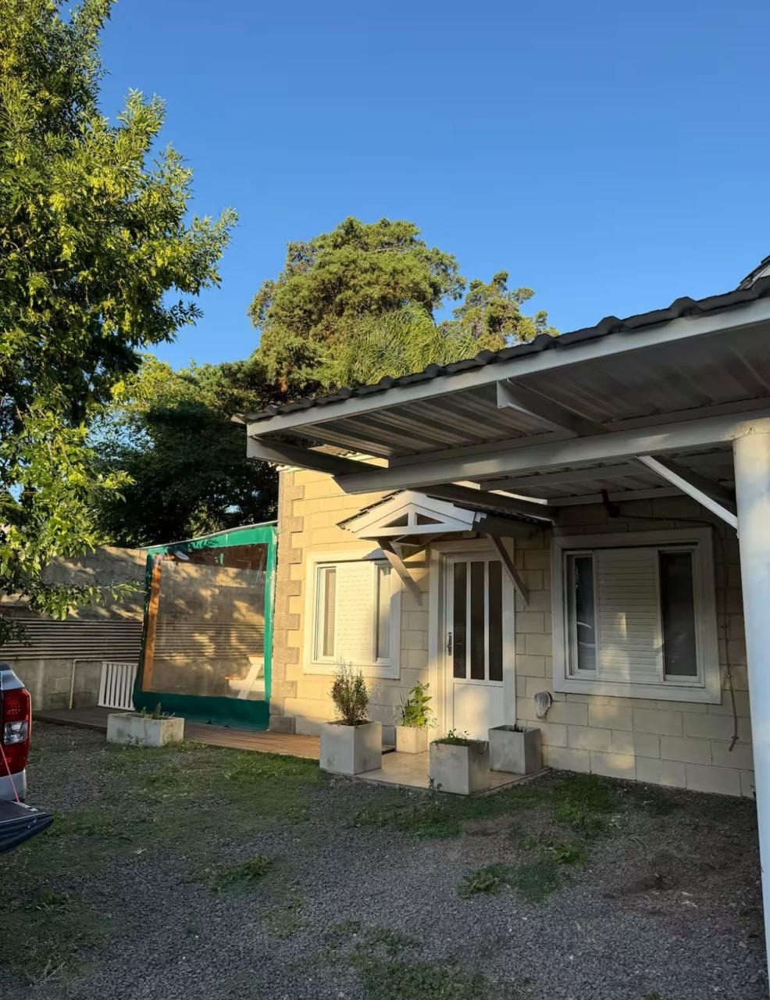
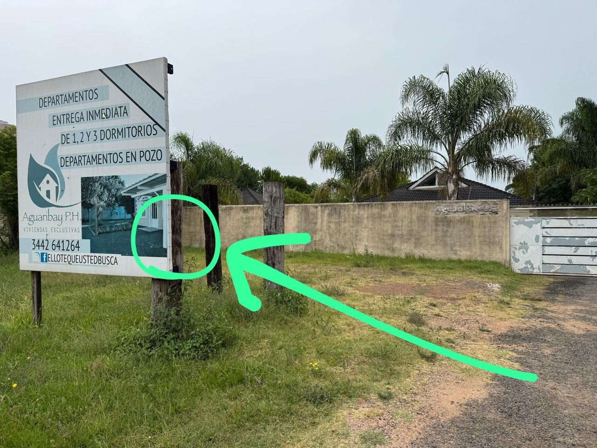
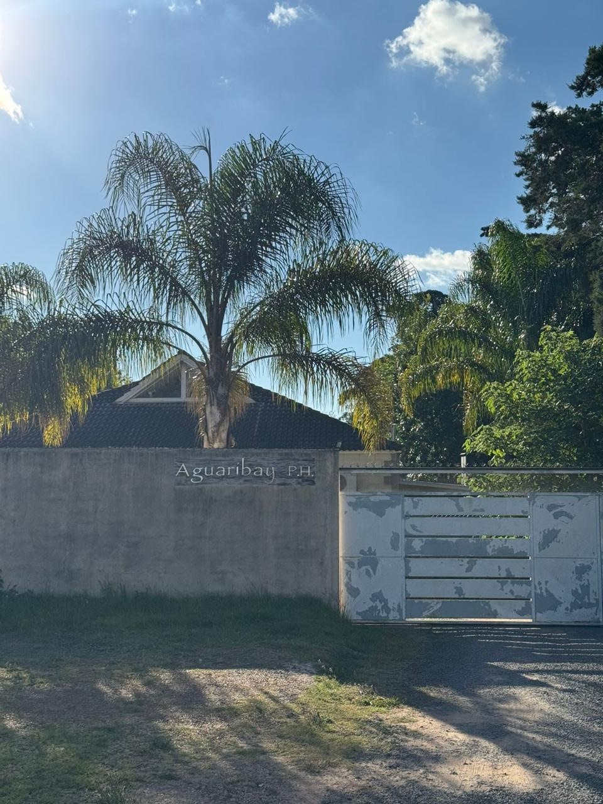
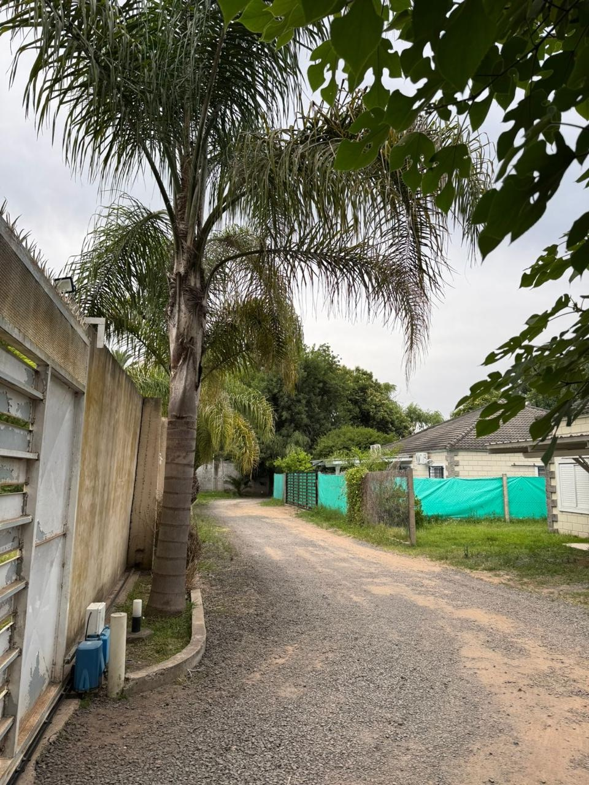
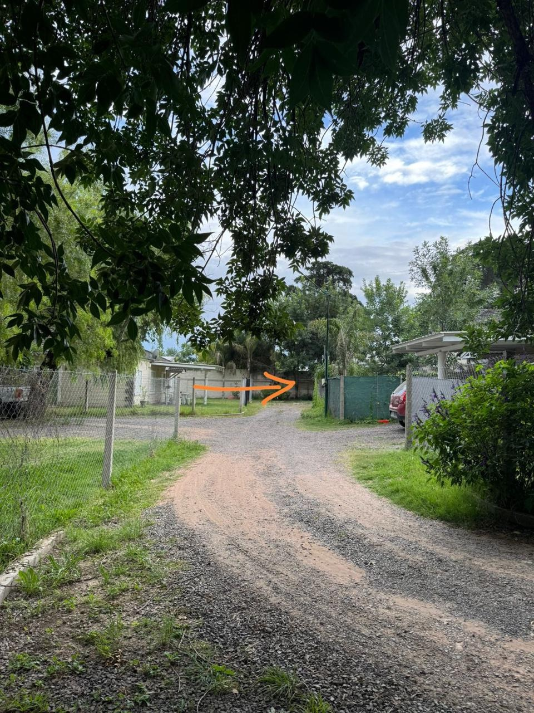
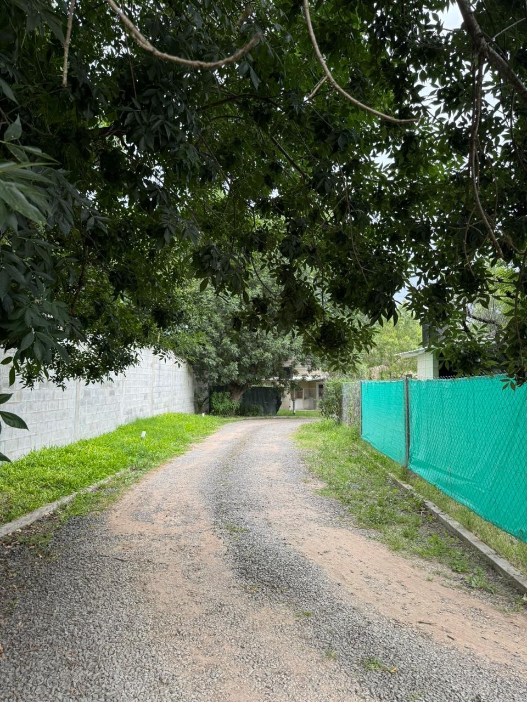
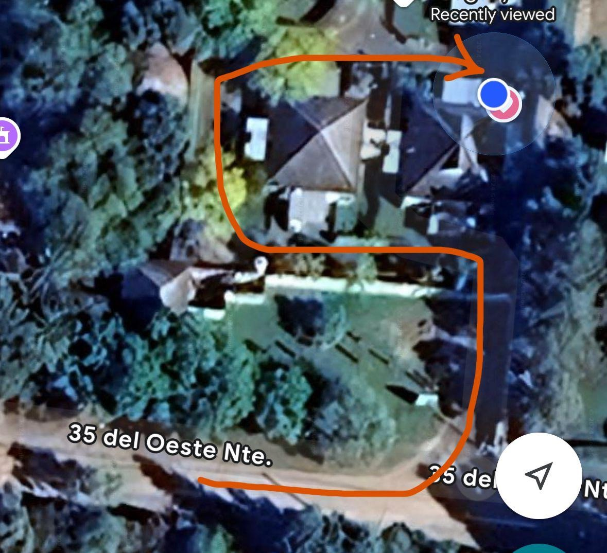

WiFi
El nombre de la red y la contraseña te los enviamos por WhatsApp antes de tu llegada.

ANTES DE SALIR
Usá el mapa para llegar al acceso de Cotimel. Una vez ahí, seguí las referencias de abajo para entrar.
Ver galería de fotosConocé Cotimel en Booking.comINGRESO
El acceso está junto al cartel de Cotimel. La foto marca la entrada que tenés que tomar desde la calle.


CAMINO INTERNO
Avanzá por el camino interno de ripio siguiendo las referencias de las fotos. Al fondo vas a encontrar las viviendas.




INGRESO AUTÓNOMO
La propiedad cuenta con modalidad de self check-in para que puedas organizar tu llegada con mayor flexibilidad. Unas horas antes te enviaremos por el chat de Booking las instrucciones y los datos necesarios para ingresar.
DURANTE LA ESTADÍA
Lo esencial para estar cómodos y cuidar la casa.
El nombre de la red y la contraseña te los enviamos por WhatsApp antes de tu llegada.
Dentro del barrio no hay recolección. Usá el cesto negro exclusivo que está afuera y dejalo allí durante la estadía; nosotros lo vaciamos después del checkout.
No hace falta dejar las camas tendidas. Podés dejar las sábanas y toallas usadas aparte; entregamos ropa limpia a cada huésped.
Para mantener un ambiente agradable para todos, no está permitido fumar dentro de la propiedad.
¿NECESITÁS AYUDA?
Estamos disponibles si te surge alguna duda durante la llegada o la estadía.
Abrir WhatsApp